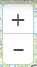
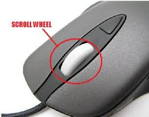
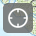

GETTING AROUND THE MAP: Navigation
There are a number of ways to navigate around the map using the zoom in/out buttons on the map, the "Find my location" button, and your mouse and keyboard.
 - The "Zoom In/Out" buttons will incrementally zoom the map in/out. Zoom in using your mouse scroll wheel by placing the cursor over the center of the area you would like to zoom in to and scroll the mouse wheel (**) up. Scroll the mouse wheel down to zoom out. Also, if you double-click (or double-tap on touch-capable devices) somewhere on the map, it will incrementally zoom in to where you double-clicked. Those with touch-enabled devices can also zoom in/out by pinching/expanding two fingers on the screen.
**
You can pan (move around) the map by holding the left-mouse button (or your finger on touch-enabled devices) down and moving the cursor around or use the up, down, left, and right arrow keys on the keyboard.
 - The "Find My Location" button will locate, zoom to, and add a purple icon at your current location. To disable this feature, refresh your page (press the F5 button).
You may also find the coordinate indicator text (located in the bottom right corner of the map) useful for navigating to a location. To navigate to a specific latitude, longitude coordinate use the Place or Coordinate Search tool.
The scale bar will give you some idea about the size of an area but to gather more information about distance and area use the Measurements & Coordinates tool.
Created with the Personal Edition of HelpNDoc: Free CHM Help documentation generator